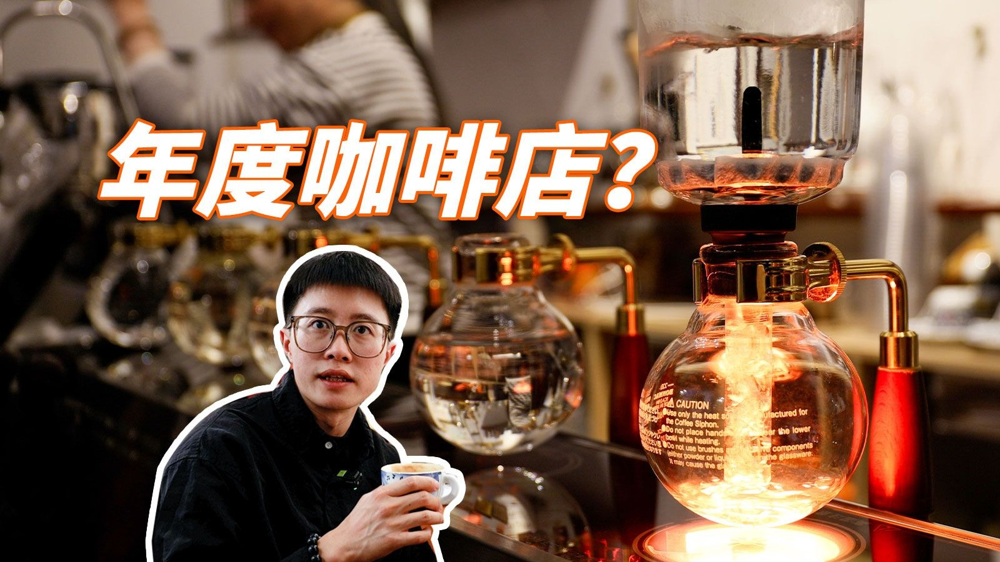
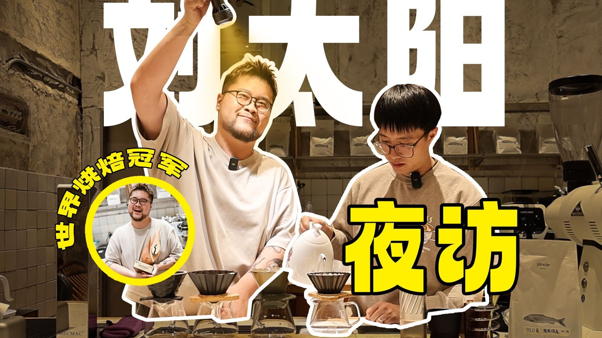
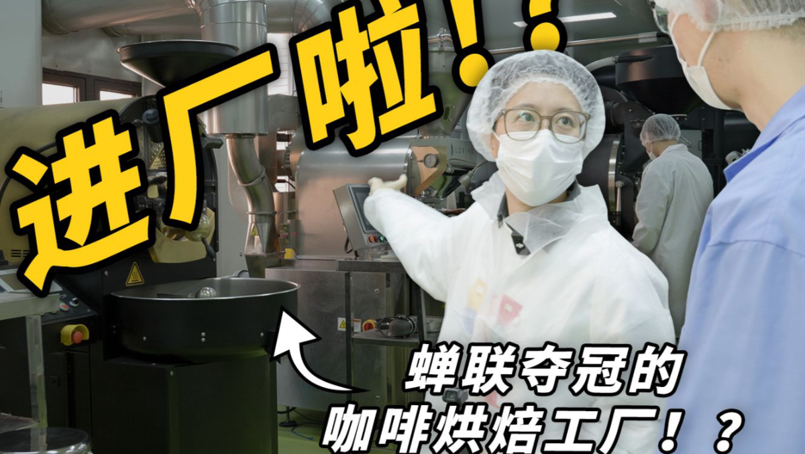

SELECTED PROOF / 2022—2026
SELECTED CUTS / 精选剪辑
点击作品，前往原片。每个项目都标注我在剪辑中解决的核心问题。
EDITING LOGIC / 剪辑方法
从人物、信息与场景中定位观看动力，让前 15 秒提出明确问题。
控制镜头长度、停顿和信息密度，让复杂内容始终清晰。
环境声、音乐与对白共同建立空间和情绪，不用画面独自解释一切。
理解长短视频的观看语境，让同一素材在不同画幅中保持有效。
ABOUT / 刘敏浩
从篮球赛事转播到咖啡知识、VLOG 与人物访谈，我可以在剪辑师、内容策划、摄影和现场导播之间切换。现场经验让我更懂素材为何产生，项目经验让我知道成片要解决什么。